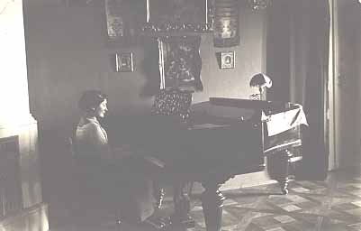

Teresas mor, Maria Teresa Szolowska ( * 2 juli 1890, U 2:a vä rldskr.), blev bortgift när hon var 16 år gammal, nästan barn, med en 12 år äldre man, Eugeniusz Walerian Trojanowski.
Hon var föräldralös då - hennes adliga föräldrar (ett grevepar) hade dött i sjukdom - och bodde hos sin släkt i närheten av staden Lodz. Familjen ville bli av med henne så fort som möjligt och när en kandidat visade sig på horisonten skaffades det fortast möjligt fram en licens (för flickan var minderårig) och hon giftes bort. Ingen brydde sig om hur det skulle gå för detta äktenskap. På den tiden hade flickorna ingen talan. Hon hade det nog inte så lätt hos sina släktingar och gick med på det hela.
Maria förde med sig 2 eller 3 egendomar i äktenskapet, som förblev hennes vid äktenskapsförordningen (därför kunde ingen av Trojanowskis bestämma över dem och Teresa blev enda arvtagaren).
En av Teresas adliga förfäder for till Spanien för att kämpa i ett krig. Han förde därifrån med sig hem sin hustru, en spanjorska, av vilken Teresa ärvde sitt utseende, sin olivfärgade hud och sitt mörka hår (och kanske sitt temperament).